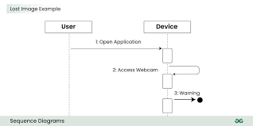
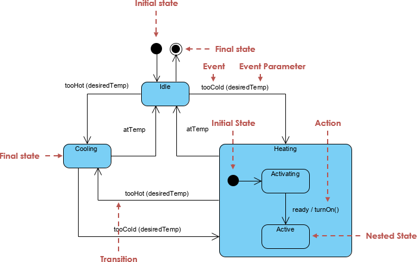
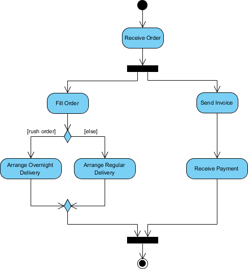

Mis on UML?
UML on visuaalne modelleerimiskeel, mida kasutatakse tarkvaraarenduses süsteemide, protsesside ja arhitektuuri kirjeldamiseks.
UML aitab arendajatel, klientidel ja süsteemiarhitektidel mõista, kuidas tarkvara töötab ning kuidas selle erinevad osad omavahel suhtlevad.
Kuidas UML tekkis?
UML tekkis vajadusest luua ühtne keel objektorienteeritud süsteemide modelleerimiseks.
Selle lõid Grady Booch ja James Rumbaugh, ühendades erinevad diagrammikeeled üheks standardiks.
Diagrammide tüübid
UML sisaldab palju erinevaid diagrammiliike.
Kasutuslooskeem
Use Case Diagram näitab süsteemi kasutajaid ja nende tegevusi süsteemis.
Use Case Diagram

Klassidiagramm
Class Diagram kirjeldab klasse, atribuute, meetodeid ja seoseid klasside vahel.
Class Diagram

Jadaskeem
Sequence Diagram näitab objektide vahelisi sõnumeid ja suhtlust ajas.
Sequence Diagram

Olekuskeem
State Diagram kirjeldab objekti olekuid ja nendevahelisi üleminekuid.
State Diagram

Tegevusdiagramm
Activity Diagram näitab tegevuste voogu, otsuseid ja protsesside loogikat.
Activity Diagram
